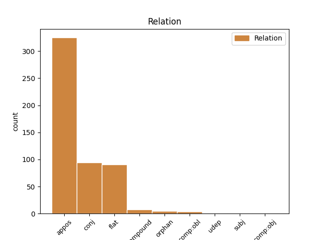
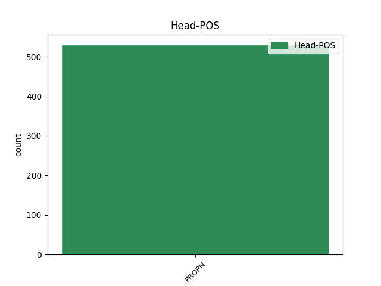
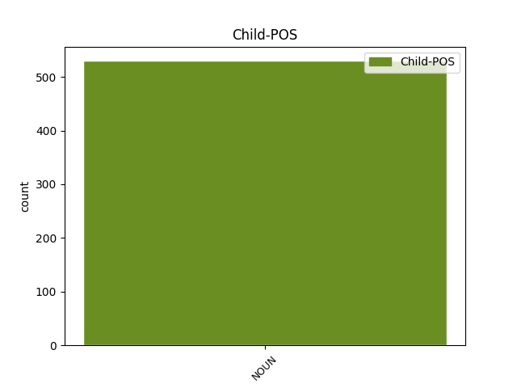

Distribution of features within this leaf



Agreement Rules sorted by frequency.
- When the dependent token is the appositional modifier(appos) of the head token, and the head token is PROPN and the dependent token is NOUN.
1 Din _ _ _ _ 0 _ _ _
2 Luminată _ _ _ _ 0 _ _ _
3 poruncă _ _ _ _ 0 _ _ _
4 a _ _ _ _ 0 _ _ _
5 Mării _ _ _ _ 0 _ _ _
6 sale _ _ _ _ 0 _ _ _
7 Prea _ _ _ _ 0 _ _ _
8 Înălțatului _ _ _ _ 0 _ _ _
9 nostru _ _ _ _ 0 _ _ _
10 Domn _ _ _ _ 0 _ _ _
11 Io _ _ _ _ 0 _ _ _
12 Ioann _ _ _ _ 0 _ _ _
13 Gheorghie _ _ _ _ 0 _ _ _
14 Caragea Caragea PROPN Npmsry Case=Acc,Nom|Definite=Def|Gender=Masc|Number=Sing 0 _ _ _
15 , _ _ _ _ 0 _ _ _
16 Vv voievod NOUN Ncmsrn Case=Acc,Nom|Definite=Ind|Gender=Masc|Number=Sing 14 appos _ ref=ANAFORA.3|SpaceAfter=No
17 . _ _ _ _ 0 _ _ _
1 De _ _ _ _ 0 _ _ _
2 loc _ _ _ _ 0 _ _ _
3 pe _ _ _ _ 0 _ _ _
4 Dăle- _ _ _ _ 0 _ _ _
5 ajungea _ _ _ _ 0 _ _ _
6 , _ _ _ _ 0 _ _ _
7 Bun _ _ _ _ 0 _ _ _
8 ajunsul _ _ _ _ 0 _ _ _
9 că _ _ _ _ 0 _ _ _
10 îi _ _ _ _ 0 _ _ _
11 da _ _ _ _ 0 _ _ _
12 Şi _ _ _ _ 0 _ _ _
13 din _ _ _ _ 0 _ _ _
14 gură _ _ _ _ 0 _ _ _
15 -așa _ _ _ _ 0 _ _ _
16 striga _ _ _ _ 0 _ _ _
17 : _ _ _ _ 0 _ _ _
18 Ei _ _ _ _ 0 _ _ _
19 , _ _ _ _ 0 _ _ _
20 tu _ _ _ _ 0 _ _ _
21 , _ _ _ _ 0 _ _ _
22 Dăleo Delea PROPN Npmsvy Case=Voc|Definite=Def|Gender=Masc|Number=Sing 0 _ _ _
23 Dămean Damian NOUN Ncmsrn Case=Acc,Nom|Definite=Ind|Gender=Masc|Number=Sing 22 flat _ SpaceAfter=No
24 , _ _ _ _ 0 _ _ _
25 Prunc _ _ _ _ 0 _ _ _
26 de _ _ _ _ 0 _ _ _
27 doisprece _ _ _ _ 0 _ _ _
28 ani _ _ _ _ 0 _ _ _
29 , _ _ _ _ 0 _ _ _
30 Tinde- _ _ _ _ 0 _ _ _
31 ţi _ _ _ _ 0 _ _ _
32 capul _ _ _ _ 0 _ _ _
33 să _ _ _ _ 0 _ _ _
34 ţi _ _ _ _ 0 _ _ _
35 -l _ _ _ _ 0 _ _ _
36 tai _ _ _ _ 0 _ _ _
37 , _ _ _ _ 0 _ _ _
38 Că _ _ _ _ 0 _ _ _
39 așa _ _ _ _ 0 _ _ _
40 tu _ _ _ _ 0 _ _ _
41 îmi _ _ _ _ 0 _ _ _
42 grăiai _ _ _ _ 0 _ _ _
43 Cînd _ _ _ _ 0 _ _ _
44 noi _ _ _ _ 0 _ _ _
45 doi _ _ _ _ 0 _ _ _
46 ne- _ _ _ _ 0 _ _ _
47 am _ _ _ _ 0 _ _ _
48 rămășat _ _ _ _ 0 _ _ _
49 , _ _ _ _ 0 _ _ _
50 Să _ _ _ _ 0 _ _ _
51 nu _ _ _ _ 0 _ _ _
52 -ţi _ _ _ _ 0 _ _ _
53 fie _ _ _ _ 0 _ _ _
54 cu _ _ _ _ 0 _ _ _
55 bănat _ _ _ _ 0 _ _ _
56 ! _ _ _ _ 0 _ _ _
1 Precum _ _ _ _ 0 _ _ _
2 cînd _ _ _ _ 0 _ _ _
3 să _ _ _ _ 0 _ _ _
4 va _ _ _ _ 0 _ _ _
5 necinsti _ _ _ _ 0 _ _ _
6 Boerul Boerul PROPN Npmsry Case=Acc,Nom|Definite=Def|Gender=Masc|Number=Sing 0 _ _ _
7 , _ _ _ _ 0 _ _ _
8 sau _ _ _ _ 0 _ _ _
9 judecătoriul judecător NOUN Ncmsry Case=Acc,Nom|Definite=Def|Gender=Masc|Number=Sing 6 conj _ ref=PART_V_CAP_9.2.5
10 în _ _ _ _ 0 _ _ _
11 locul _ _ _ _ 0 _ _ _
12 dregătoriei _ _ _ _ 0 _ _ _
13 sale _ _ _ _ 0 _ _ _
14 , _ _ _ _ 0 _ _ _
15 unde- _ _ _ _ 0 _ _ _
16 ș _ _ _ _ 0 _ _ _
17 împlineaște _ _ _ _ 0 _ _ _
18 datoria _ _ _ _ 0 _ _ _
19 sa _ _ _ _ 0 _ _ _
20 , _ _ _ _ 0 _ _ _
21 sau _ _ _ _ 0 _ _ _
22 judecă _ _ _ _ 0 _ _ _
23 , _ _ _ _ 0 _ _ _
24 ori _ _ _ _ 0 _ _ _
25 pre _ _ _ _ 0 _ _ _
26 Preot _ _ _ _ 0 _ _ _
27 unde _ _ _ _ 0 _ _ _
28 slujaște _ _ _ _ 0 _ _ _
29 , _ _ _ _ 0 _ _ _
30 și _ _ _ _ 0 _ _ _
31 cealelalte _ _ _ _ 0 _ _ _
32 . _ _ _ _ 0 _ _ _
1 Evsevie _ _ _ _ 0 _ _ _
2 arată _ _ _ _ 0 _ _ _
3 stema _ _ _ _ 0 _ _ _
4 celor _ _ _ _ 0 _ _ _
5 4 _ _ _ _ 0 _ _ _
6 Evanghelisti _ _ _ _ 0 _ _ _
7 , _ _ _ _ 0 _ _ _
8 lui _ _ _ _ 0 _ _ _
9 Matei _ _ _ _ 0 _ _ _
10 îi _ _ _ _ 0 _ _ _
11 dă _ _ _ _ 0 _ _ _
12 stemă _ _ _ _ 0 _ _ _
13 chip _ _ _ _ 0 _ _ _
14 de _ _ _ _ 0 _ _ _
15 om _ _ _ _ 0 _ _ _
16 , _ _ _ _ 0 _ _ _
17 lui _ _ _ _ 0 _ _ _
18 Marcu _ _ _ _ 0 _ _ _
19 leu _ _ _ _ 0 _ _ _
20 , _ _ _ _ 0 _ _ _
21 Luca _ _ _ _ 0 _ _ _
22 vițăl _ _ _ _ 0 _ _ _
23 , _ _ _ _ 0 _ _ _
24 iară _ _ _ _ 0 _ _ _
25 lui _ _ _ _ 0 _ _ _
26 Ioan Ion PROPN Npmsrn Case=Acc,Nom|Definite=Ind|Gender=Masc|Number=Sing 0 _ _ _
27 vultur vultur NOUN Ncmsrn Case=Acc,Nom|Definite=Ind|Gender=Masc|Number=Sing 26 orphan _ ref=IOAN.1_PRED.36|SpaceAfter=No
28 , _ _ _ _ 0 _ _ _
29 că _ _ _ _ 0 _ _ _
30 el _ _ _ _ 0 _ _ _
31 au _ _ _ _ 0 _ _ _
32 zburat _ _ _ _ 0 _ _ _
33 mai _ _ _ _ 0 _ _ _
34 sus _ _ _ _ 0 _ _ _
35 , _ _ _ _ 0 _ _ _
36 pînă _ _ _ _ 0 _ _ _
37 la _ _ _ _ 0 _ _ _
38 Tatăl _ _ _ _ 0 _ _ _
39 , _ _ _ _ 0 _ _ _
40 începînd _ _ _ _ 0 _ _ _
41 a _ _ _ _ 0 _ _ _
42 scrie _ _ _ _ 0 _ _ _
43 de _ _ _ _ 0 _ _ _
44 firea _ _ _ _ 0 _ _ _
45 dumnezăiască _ _ _ _ 0 _ _ _
46 , _ _ _ _ 0 _ _ _
47 iară _ _ _ _ 0 _ _ _
48 alalți _ _ _ _ 0 _ _ _
49 au _ _ _ _ 0 _ _ _
50 scris _ _ _ _ 0 _ _ _
51 de _ _ _ _ 0 _ _ _
52 firea _ _ _ _ 0 _ _ _
53 omenească _ _ _ _ 0 _ _ _
54 . _ _ _ _ 0 _ _ _
1 Iară _ _ _ _ 0 _ _ _
2 voiu _ _ _ _ 0 _ _ _
3 să _ _ _ _ 0 _ _ _
4 știți _ _ _ _ 0 _ _ _
5 voi _ _ _ _ 0 _ _ _
6 , _ _ _ _ 0 _ _ _
7 că _ _ _ _ 0 _ _ _
8 a _ _ _ _ 0 _ _ _
9 tot _ _ _ _ 0 _ _ _
10 bărbatul bărbat NOUN Ncmsry Case=Acc,Nom|Definite=Def|Gender=Masc|Number=Sing 15 comp:obl _ ref=PAVEL_1.CORINT_11.3|SpaceAfter=No
11 , _ _ _ _ 0 _ _ _
12 cap _ _ _ _ 0 _ _ _
13 îi _ _ _ _ 0 _ _ _
14 iaste _ _ _ _ 0 _ _ _
15 Hristos Hristos PROPN Npmsrn Case=Acc,Nom|Definite=Ind|Gender=Masc|Number=Sing 0 _ _ _
16 , _ _ _ _ 0 _ _ _
17 iară _ _ _ _ 0 _ _ _
18 capul _ _ _ _ 0 _ _ _
19 muerii _ _ _ _ 0 _ _ _
20 iaste _ _ _ _ 0 _ _ _
21 bărbatul _ _ _ _ 0 _ _ _
22 , _ _ _ _ 0 _ _ _
23 iară _ _ _ _ 0 _ _ _
24 capul _ _ _ _ 0 _ _ _
25 lui _ _ _ _ 0 _ _ _
26 Hristos _ _ _ _ 0 _ _ _
27 iaste _ _ _ _ 0 _ _ _
28 Dumnezău _ _ _ _ 0 _ _ _
29 . _ _ _ _ 0 _ _ _
1 Au _ _ _ _ 0 _ _ _
2 spus _ _ _ _ 0 _ _ _
3 că _ _ _ _ 0 _ _ _
4 acolo _ _ _ _ 0 _ _ _
5 este _ _ _ _ 0 _ _ _
6 comoară _ _ _ _ 0 _ _ _
7 mare _ _ _ _ 0 _ _ _
8 în _ _ _ _ 0 _ _ _
9 Dealul deal PROPN Npmsry Case=Acc,Nom|Definite=Def|Gender=Masc|Number=Sing 0 _ _ _
10 Galbenului galben NOUN Ncmsoy Case=Dat,Gen|Definite=Def|Gender=Masc|Number=Sing 9 compound _ SpaceAfter=No
11 . _ _ _ _ 0 _ _ _
1 Ce _ _ _ _ 0 _ _ _
2 zic _ _ _ _ 0 _ _ _
3 că _ _ _ _ 0 _ _ _
4 păgînii păgân NOUN Ncmpry Case=Acc,Nom|Definite=Def|Gender=Masc|Number=Plur 9 subj _ ref=PAVEL_1.CORINT_10.20
5 ce _ _ _ _ 0 _ _ _
6 jărtvescu _ _ _ _ 0 _ _ _
7 , _ _ _ _ 0 _ _ _
8 dracului _ _ _ _ 0 _ _ _
9 jărtvescu jertfi PROPN Npmsry Case=Acc,Nom|Definite=Def|Gender=Masc|Number=Sing 0 _ _ _
10 , _ _ _ _ 0 _ _ _
11 iară _ _ _ _ 0 _ _ _
12 nu _ _ _ _ 0 _ _ _
13 lui _ _ _ _ 0 _ _ _
14 Dumnezău _ _ _ _ 0 _ _ _
15 , _ _ _ _ 0 _ _ _
16 iară _ _ _ _ 0 _ _ _
17 nu _ _ _ _ 0 _ _ _
18 voiu _ _ _ _ 0 _ _ _
19 să _ _ _ _ 0 _ _ _
20 fiți _ _ _ _ 0 _ _ _
21 voi _ _ _ _ 0 _ _ _
22 partnici _ _ _ _ 0 _ _ _
23 dracilor _ _ _ _ 0 _ _ _
24 . _ _ _ _ 0 _ _ _
1 Iar _ _ _ _ 0 _ _ _
2 strigă _ _ _ _ 0 _ _ _
3 fratele- _ _ _ _ 0 _ _ _
4 ăl _ _ _ _ 0 _ _ _
5 mic _ _ _ _ 0 _ _ _
6 , _ _ _ _ 0 _ _ _
7 Căci _ _ _ _ 0 _ _ _
8 e _ _ _ _ 0 _ _ _
9 mic _ _ _ _ 0 _ _ _
10 Şi _ _ _ _ 0 _ _ _
11 mai _ _ _ _ 0 _ _ _
12 voinic _ _ _ _ 0 _ _ _
13 , _ _ _ _ 0 _ _ _
14 Tot _ _ _ _ 0 _ _ _
15 slujind _ _ _ _ 0 _ _ _
16 pe _ _ _ _ 0 _ _ _
17 ispravnic _ _ _ _ 0 _ _ _
18 , _ _ _ _ 0 _ _ _
19 Multă _ _ _ _ 0 _ _ _
20 minte _ _ _ _ 0 _ _ _
21 -a _ _ _ _ 0 _ _ _
22 dobîndit _ _ _ _ 0 _ _ _
23 , _ _ _ _ 0 _ _ _
24 Aferim Aferim PROPN Npmsrn Case=Acc,Nom|Definite=Ind|Gender=Masc|Number=Sing 0 _ _ _
25 , _ _ _ _ 0 _ _ _
26 ce _ _ _ _ 0 _ _ _
27 mai _ _ _ _ 0 _ _ _
28 voinic voinic NOUN Ncmsrn Case=Acc,Nom|Definite=Ind|Gender=Masc|Number=Sing 24 udep _ SpaceAfter=No
29 ! _ _ _ _ 0 _ _ _
1 Am _ _ _ _ 0 _ _ _
2 văzut _ _ _ _ 0 _ _ _
3 -o _ _ _ _ 0 _ _ _
4 la _ _ _ _ 0 _ _ _
5 fântână _ _ _ _ 0 _ _ _
6 , _ _ _ _ 0 _ _ _
7 Cu _ _ _ _ 0 _ _ _
8 doi _ _ _ _ 0 _ _ _
9 copilași _ _ _ _ 0 _ _ _
10 de _ _ _ _ 0 _ _ _
11 mână _ _ _ _ 0 _ _ _
12 , _ _ _ _ 0 _ _ _
13 Scotea scoate PROPN Npfsry Case=Acc,Nom|Definite=Def|Gender=Fem|Number=Sing 0 _ _ _
14 apă apă NOUN Ncfsrn Case=Acc,Nom|Definite=Ind|Gender=Fem|Number=Sing 13 comp:obj _ _
15 și _ _ _ _ 0 _ _ _
16 plângea _ _ _ _ 0 _ _ _
17 , _ _ _ _ 0 _ _ _
18 Copilașii _ _ _ _ 0 _ _ _
19 o _ _ _ _ 0 _ _ _
20 -ntreba _ _ _ _ 0 _ _ _
21 : _ _ _ _ 0 _ _ _
22 De _ _ _ _ 0 _ _ _
23 ce _ _ _ _ 0 _ _ _
24 plângi _ _ _ _ 0 _ _ _
25 , _ _ _ _ 0 _ _ _
26 mămica _ _ _ _ 0 _ _ _
27 mea _ _ _ _ 0 _ _ _
28 ? _ _ _ _ 0 _ _ _
Disagree Examples:
1 Cum _ _ _ _ 0 _ _ _
2 grăise _ _ _ _ 0 _ _ _
3 cătră _ _ _ _ 0 _ _ _
4 părinții _ _ _ _ 0 _ _ _
5 noștri _ _ _ _ 0 _ _ _
6 , _ _ _ _ 0 _ _ _
7 lui _ _ _ _ 0 _ _ _
8 Avraam Avraam PROPN Npmsrn Case=Acc,Nom|Definite=Ind|Gender=Masc|Number=Sing 0 _ _ _
9 , _ _ _ _ 0 _ _ _
10 și _ _ _ _ 0 _ _ _
11 sămenții seminție NOUN Ncfsoy Case=Dat,Gen|Definite=Def|Gender=Fem|Number=Sing 8 conj _ ref=LUCA1.55
12 lui _ _ _ _ 0 _ _ _
13 în _ _ _ _ 0 _ _ _
14 veaci _ _ _ _ 0 _ _ _
15 . _ _ _ _ 0 _ _ _
1 Și _ _ _ _ 0 _ _ _
2 era _ _ _ _ 0 _ _ _
3 Iosif Iosif PROPN Npmsrn Case=Acc,Nom|Definite=Ind|Gender=Masc|Number=Sing 0 _ _ _
4 și _ _ _ _ 0 _ _ _
5 Muma mamă NOUN Ncfsry Case=Acc,Nom|Definite=Def|Gender=Fem|Number=Sing 3 conj _ ref=LUCA2.33
6 lui _ _ _ _ 0 _ _ _
7 să _ _ _ _ 0 _ _ _
8 mira _ _ _ _ 0 _ _ _
9 de _ _ _ _ 0 _ _ _
10 cealea _ _ _ _ 0 _ _ _
11 ce _ _ _ _ 0 _ _ _
12 zicea _ _ _ _ 0 _ _ _
13 despre _ _ _ _ 0 _ _ _
14 El _ _ _ _ 0 _ _ _
15 . _ _ _ _ 0 _ _ _
1 Și _ _ _ _ 0 _ _ _
2 nu _ _ _ _ 0 _ _ _
3 luară _ _ _ _ 0 _ _ _
4 aminte _ _ _ _ 0 _ _ _
5 Iosif Iosif PROPN Npmsrn Case=Acc,Nom|Definite=Ind|Gender=Masc|Number=Sing 0 _ _ _
6 și _ _ _ _ 0 _ _ _
7 Muma mamă NOUN Ncfsry Case=Acc,Nom|Definite=Def|Gender=Fem|Number=Sing 5 conj _ ref=LUCA2.43
8 lui _ _ _ _ 0 _ _ _
9 . _ _ _ _ 0 _ _ _
1 Şi _ _ _ _ 0 _ _ _
2 pogorî _ _ _ _ 0 _ _ _
3 cu _ _ _ _ 0 _ _ _
4 ei _ _ _ _ 0 _ _ _
5 , _ _ _ _ 0 _ _ _
6 stătu _ _ _ _ 0 _ _ _
7 în _ _ _ _ 0 _ _ _
8 loc _ _ _ _ 0 _ _ _
9 șăsu _ _ _ _ 0 _ _ _
10 ; _ _ _ _ 0 _ _ _
11 și _ _ _ _ 0 _ _ _
12 mulțimea _ _ _ _ 0 _ _ _
13 ucenicilor _ _ _ _ 0 _ _ _
14 ucenicilor _ _ _ _ 0 _ _ _
15 Lui _ _ _ _ 0 _ _ _
16 și _ _ _ _ 0 _ _ _
17 mulțime _ _ _ _ 0 _ _ _
18 multă _ _ _ _ 0 _ _ _
19 de _ _ _ _ 0 _ _ _
20 oameni _ _ _ _ 0 _ _ _
21 den _ _ _ _ 0 _ _ _
22 toată _ _ _ _ 0 _ _ _
23 Iudea _ _ _ _ 0 _ _ _
24 și _ _ _ _ 0 _ _ _
25 den _ _ _ _ 0 _ _ _
26 Ierosalim _ _ _ _ 0 _ _ _
27 și _ _ _ _ 0 _ _ _
28 din _ _ _ _ 0 _ _ _
29 țînutul _ _ _ _ 0 _ _ _
30 mării _ _ _ _ 0 _ _ _
31 Tirului Tir PROPN Npmsoy Case=Dat,Gen|Definite=Def|Gender=Masc|Number=Sing 0 _ _ _
32 și _ _ _ _ 0 _ _ _
33 a _ _ _ _ 0 _ _ _
34 Sidonii Sidon NOUN Ncfsoy Case=Dat,Gen|Definite=Def|Gender=Fem|Number=Sing 31 conj _ ref=LUCA6.17|SpaceAfter=No
35 , _ _ _ _ 0 _ _ _
36 carii _ _ _ _ 0 _ _ _
37 venise _ _ _ _ 0 _ _ _
38 să _ _ _ _ 0 _ _ _
39 asculte _ _ _ _ 0 _ _ _
40 pre _ _ _ _ 0 _ _ _
41 El _ _ _ _ 0 _ _ _
42 și _ _ _ _ 0 _ _ _
43 să _ _ _ _ 0 _ _ _
44 să _ _ _ _ 0 _ _ _
45 vindece _ _ _ _ 0 _ _ _
46 de _ _ _ _ 0 _ _ _
47 boalele _ _ _ _ 0 _ _ _
48 sale _ _ _ _ 0 _ _ _
49 . _ _ _ _ 0 _ _ _
1 Carele _ _ _ _ 0 _ _ _
2 nu _ _ _ _ 0 _ _ _
3 era _ _ _ _ 0 _ _ _
4 însoțit _ _ _ _ 0 _ _ _
5 în _ _ _ _ 0 _ _ _
6 sfatul _ _ _ _ 0 _ _ _
7 și _ _ _ _ 0 _ _ _
8 în _ _ _ _ 0 _ _ _
9 lucrurele _ _ _ _ 0 _ _ _
10 lor _ _ _ _ 0 _ _ _
11 , _ _ _ _ 0 _ _ _
12 den _ _ _ _ 0 _ _ _
13 Arimatea Arimateea PROPN Npfsry Case=Acc,Nom|Definite=Def|Gender=Fem|Number=Sing 0 _ _ _
14 , _ _ _ _ 0 _ _ _
15 orașul oraș NOUN Ncmsry Case=Acc,Nom|Definite=Def|Gender=Masc|Number=Sing 13 appos _ ref=LUCA23.51
16 jidovilor _ _ _ _ 0 _ _ _
17 , _ _ _ _ 0 _ _ _
18 carele _ _ _ _ 0 _ _ _
19 și _ _ _ _ 0 _ _ _
20 acela _ _ _ _ 0 _ _ _
21 aștepta _ _ _ _ 0 _ _ _
22 Împărățiia _ _ _ _ 0 _ _ _
23 lui _ _ _ _ 0 _ _ _
24 Dumnezău _ _ _ _ 0 _ _ _
25 . _ _ _ _ 0 _ _ _